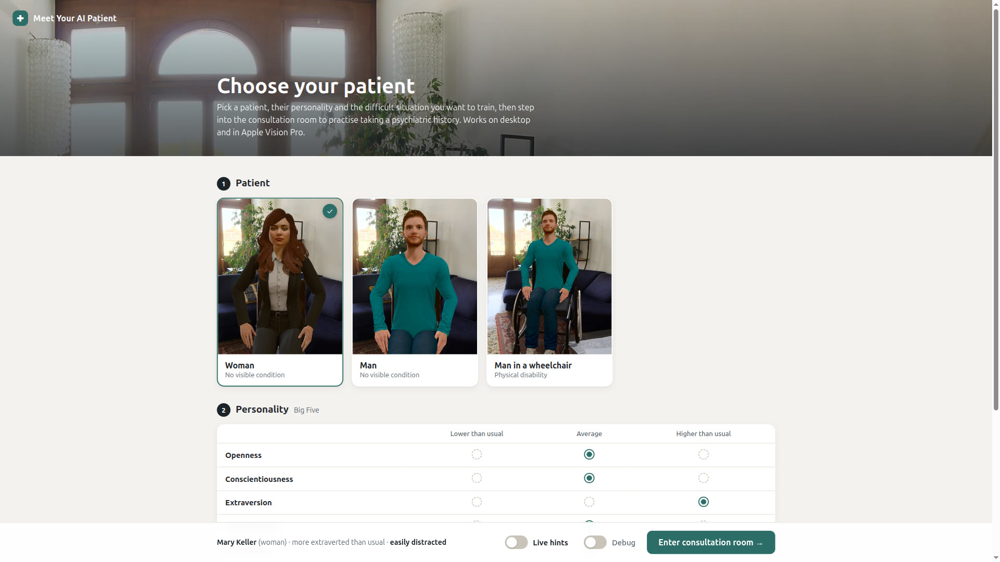
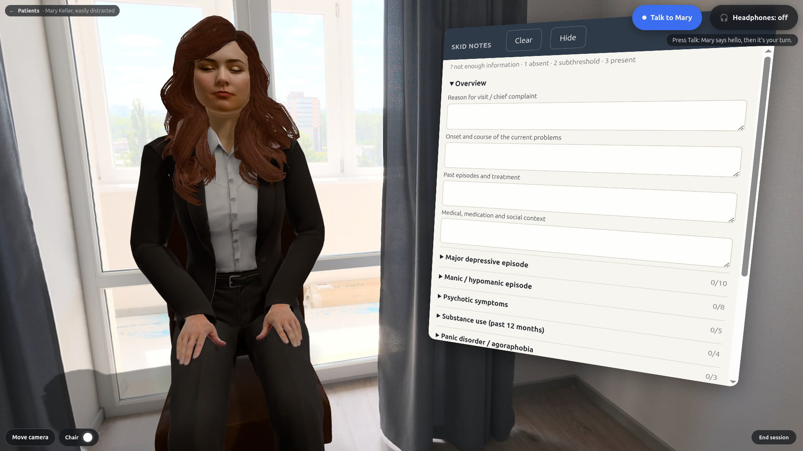

OTH Amberg-Weiden · Meet Your AI Patient
PsyTrain:
practise the hard conversations
before they're real
A life-size AI patient who talks, reacts, gets distracted or angry, and gives you feedback afterwards.
The problem
Difficult patients are learned on real patients
- The hardest part of a history is the patient who drifts off or gets aggressive.
- Simulation actors are expensive and a case can't be repeated on demand.
- Feedback is rare and vague: no one points at the turn where it went wrong.
Step 1 · Build a case
Patient · Big Five personality · difficult situation

Landing page: choose patient, personality and situation

3D consultation room with SKID interview notes (three.js + WebXR)
Live AI patient · easily distracted
Live AI patient · aggressive
Step 3 · Learn from it
Feedback that points at the exact turn

Summary: facts found, key moment, what to try instead (built-in sample report)

Transcript evidence: where it started, why it matters, what to say instead
How it works
One live loop per answer
🎙 Ears & voice
ElevenLabs Agents: speech recognition, turn-taking, voice per patient
→
🧠 Orchestrator
Claude on Amazon Bedrock picks the mode (normal / distracted / aggressive), then writes the answer with a running memory
→
🧍 Body
Body cue with every answer: posture, gaze, gestures, lip-sync (TalkingHead, three.js, WebXR)
→
📋 MIRROR
Hints during the talk, scored feedback after it
Hint strategies are drawn from therapy literature (Socratic dialogue, psychosis worksheets) in hints.json.
PsyTrain
Practise. Get feedback.
Try again.
Next: all Big Five traits, more difficult situations, a classroom test on Apple Vision Pro.
Easily distractedAggressiveLive hintsScored feedback